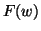

Next:
Qu'est-ce que les ondelettes
Up:
FAQ sur les ondelettes
Previous:
Concernant le problème de
Contents
Un peu de théorie solide
Subsections
Qu'est-ce que les ondelettes orthogonales, biorthogonales?
Pourquoi utiliser les ondelettes biorthogonales?
Qu'est-ce qu'une base de Riez?
Est-ce qu'il y a une autre définition pour les bases de Riesz? (contribuée par F. Lenardon)
Qu'est-ce qu'un repère?
Qu'est-ce qu'un repère étroit (tight frame)?
Est-ce qu'un repère est une base de Riesz?
Est-ce qu'un repère étroit est une base de Riesz?
Est-ce qu'une base de Riesz est un repère?
Quel est l'importance d'avoir un repère?
Qu'est-ce que le nombre de moments nuls et quel lien fait-on avec la régularité?
Pourquoi la transformée de Fourier  d'une fonction
,
, tend vers zéro quand
devient grand.
Comment calculer la fréquence instantanée d'un signal non stationaire avec les ondelettes?
Est-ce qu'il existe des ondelettes respectant la causalité?
Daniel Lemire 2004-02-02